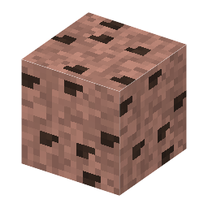

説明
①子ども 花こう岩の中に、黒っぽい重い粒が入った岩。スズの鉱石。
②学生 花こう岩の中だけにできる（y−10〜70、鉄マンガン重石と同じ帯）。鉄のツルハシ以上で錫石が落ちる。
③大人 スズとタングステンは、花こう岩が冷えるときに最後に残った熱い水から、同じ鉱脈にいっしょに沈殿することが多い。イギリスのコーンウォールは青銅器時代からのスズの産地。
④ガチ 錫石はとても重く（密度 約7）、さびない。岩が風化しても川の砂の中に残って集まる（漂砂鉱床）。マレーシアやインドネシアの大きなスズ鉱山は、この川や海の砂を掘っている（ゲームでは花こう岩の中だけ）。
作り方
（作り方のレシピは無い：拾う・掘る・ほかの方法）
使い道
（このアイテムを使うレシピは無い）